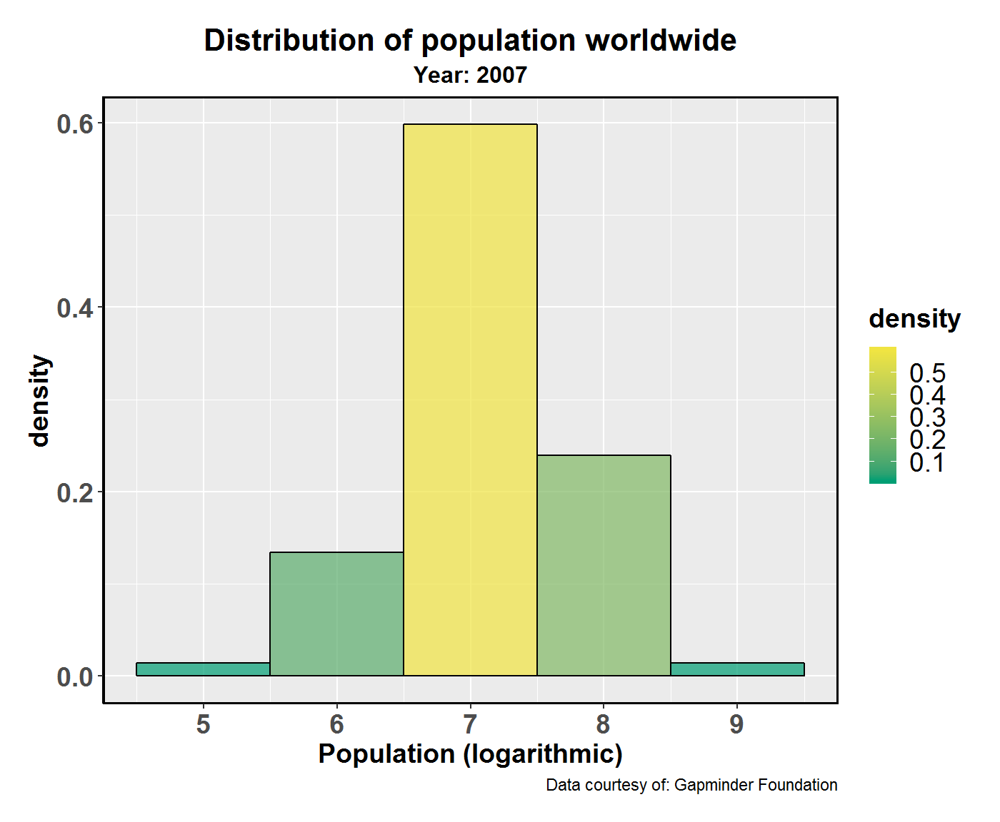
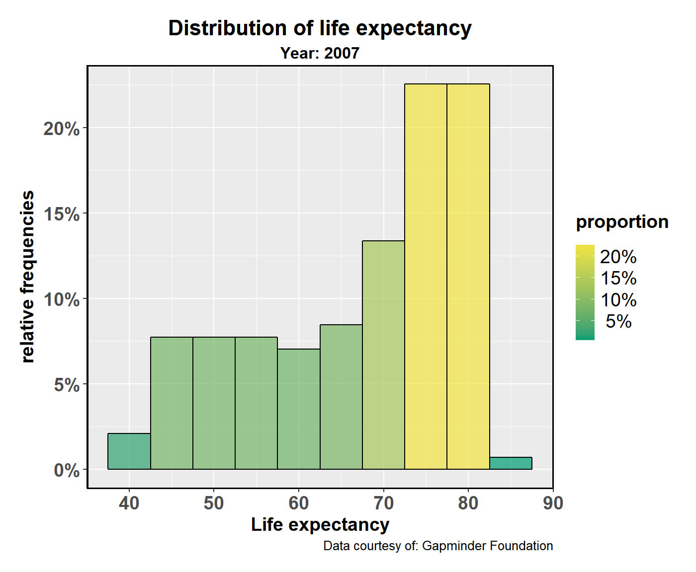

gghistostats
Indrajeet Patil
2018-05-12
gghistostats.RmdThe function ggstatsplot::gghistostats is meant to provide a publication-ready histogram with all statistical details included in the plot itself. We will see examples of how to use this function in this vignette with the gapminder dataset.
To begin with, here are some instances where you would want to use gghistostats-
- to check distribution of a continuous variable
- to check if the mean of variable is different from a specified value
Note before: The following demo uses the pipe operator (%>%), so in case you are not familiar with this operator, here is a good explanation: http://r4ds.had.co.nz/pipes.html
Distribution with gghistostats
To illustrate how this function can be used, we will use the gapminder dataset. This dataset (available in eponymous package on CRAN) provides values for life expectancy, GDP per capita, and population, every five years, from 1952 to 2007, for each of 142 countries and was collected by the Gapminder Foundation. Let’s have a look at the data-
library(gapminder)
library(dplyr)
dplyr::glimpse(x = gapminder::gapminder)
#> Observations: 1,704
#> Variables: 6
#> $ country <fct> Afghanistan, Afghanistan, Afghanistan, Afghanistan, ...
#> $ continent <fct> Asia, Asia, Asia, Asia, Asia, Asia, Asia, Asia, Asia...
#> $ year <int> 1952, 1957, 1962, 1967, 1972, 1977, 1982, 1987, 1992...
#> $ lifeExp <dbl> 28.801, 30.332, 31.997, 34.020, 36.088, 38.438, 39.8...
#> $ pop <int> 8425333, 9240934, 10267083, 11537966, 13079460, 1488...
#> $ gdpPercap <dbl> 779.4453, 820.8530, 853.1007, 836.1971, 739.9811, 78...Suppose the first thing we want to check is the distribution of population worldwide in 2007. In this case, we are not interested in any statistics and, therefore, can set the results.subtitle argument to FALSE.
library(ggstatsplot)
gapminder::gapminder %>%
dplyr::filter(.data = ., year == 2007) %>% # select data only from the year 2007
ggstatsplot::gghistostats(
data = ., # data from which variable is to be taken
x = pop, # numeric variable
results.subtitle = FALSE, # don't run statistical tests
messages = FALSE, # turn off messages
xlab = "Population", # x-axis label
title = "Distribution of population worldwide", # title for the plot
subtitle = "Year: 2007", # subtitle for the plot
caption = "Data courtesy of: Gapminder Foundation" # caption for the plot
)
Although this plot is useful, it is still not satisfactory as most of the mass seems to be concentrated at 0 due to the large range of numbers. We can remedy this by converting population to logarithmic scale. We can additionally adjust binwidth so that we have bins for every increase in order of magnitude.
gapminder::gapminder %>%
dplyr::filter(.data = ., year == 2007) %>% # select data only from the year 2007
dplyr::mutate(.data = ., pop_log = log10(pop)) %>% # creating new population variable
ggstatsplot::gghistostats(
data = ., # data from which variable is to be taken
x = pop_log, # numeric variable
results.subtitle = FALSE, # don't run statistical tests
messages = FALSE, # turn off messages
xlab = "Population (logarithmic)", # x-axis label
title = "Distribution of population worldwide", # title for the plot
subtitle = "Year: 2007", # subtitle for the plot
caption = "Data courtesy of: Gapminder Foundation", # caption for the plot
binwidth = 1 # new binwidth
)
So far we have been showing the count informatiton with the bar chart. Another option included is density. Showing count gives an idea about raw counts, while density gives information about proportional prevalence of values in a certain range.
For example,
gapminder::gapminder %>%
dplyr::filter(.data = ., year == 2007) %>% # select data only from the year 2007
dplyr::mutate(.data = ., pop_log = log10(pop)) %>% # creating new population variable
ggstatsplot::gghistostats(
data = ., # data from which variable is to be taken
x = pop_log, # numeric variable
bar.measure = "density", # bar height measure
results.subtitle = FALSE, # don't run statistical tests
messages = FALSE, # turn off messages
xlab = "Population (logarithmic)", # x-axis label
title = "Distribution of population worldwide", # title for the plot
subtitle = "Year: 2007", # subtitle for the plot
caption = "Data courtesy of: Gapminder Foundation", # caption for the plot
binwidth = 1, # new binwidth
low.color = "#009E73", # color for the lower end of the colorbar
high.color = "#F0E442" # color for the upper end of the colorbar
)
And yet another option is to show relative frequencies that denote percentage "proportion" of the total observations that fall in a given bin.
gapminder::gapminder %>%
dplyr::filter(.data = ., year == 2007) %>%
ggstatsplot::gghistostats(
data = ., # data from which variable is to be taken
x = lifeExp, # numeric variable
bar.measure = "proportion", # bar height measure
results.subtitle = FALSE, # don't run statistical tests
messages = FALSE, # turn off messages
xlab = "Life expectancy", # x-axis label
title = "Distribution of life expectancy", # title for the plot
subtitle = "Year: 2007", # subtitle for the plot
caption = "Data courtesy of: Gapminder Foundation", # caption for the plot
binwidth = 5, # new binwidth
low.color = "#009E73", # color for the lower end of the colorbar
high.color = "#F0E442" # color for the upper end of the colorbar
)
This shows the utility of gghistostats in case of data exploration.
Statistical analysis with gghistostats
Let’s say we are now interested in investigating whether the mean life expectancy in 2007 across the world has improved during the 20th-Century. In 1950, it was 48, so this is the test.value we are going to use.
gapminder::gapminder %>%
dplyr::filter(.data = ., year == 2007) %>% # select data only from the year 2007
ggstatsplot::gghistostats(
data = ., # data from which variable is to be taken
x = lifeExp, # numeric variable
messages = FALSE, # turn off messages
test.value = 48, # test value against which sample mean is to be compared
xlab = "Life expectancy", # x-axis label
title = "Life expectancy worldwide", # title for the plot
subtitle = "Year: 2007", # subtitle for the plot
caption = "Data courtesy of: Gapminder Foundation", # caption for the plot
centrality.para = "mean" # plotting centrality parameter (mean)
)
Although there are still some countries where the life expectancy is low, on average, the life expectancy worldwide has improved compared to what it was in 1950.
gghistostats also provides the opportunity to compute Bayes Factors to quantify evidence in favor of the alternative (BF10) or the null hypothesis (BF01). In practice, you need to compute only one and the other will just be the inverse. In the current example, let’s say we want to quantify evidence in favor of the alternative hypothesis (H1) that the life expectancy in 2007 has improved significantly worldwide since 1957. The null, in this case, will of course be that there is no improvement.
gapminder::gapminder %>%
dplyr::filter(.data = ., year == 2007) %>%
ggstatsplot::gghistostats(
data = ., # data from which variable is to be taken
x = lifeExp, # numeric variable
messages = FALSE, # turn off messages
type = "bf", # bayesian one sample t-test
test.value = 48, # test value
xlab = "Life expectancy", # x-axis label
title = "Life expectancy worldwide", # title for the plot
subtitle = "Year: 2007", # subtitle for the plot
caption = "Note: black line - 1950; blue line - 2007", # caption for the plot
test.value.line = TRUE, # show a vertical line at `test.value`
centrality.para = "mean" # plotting centrality parameter (mean)
)
As this analysis shows, Bayes Factor value provides conclusive evidence in favor of the alternative hypothesis: Life expectancy worldwide has improved significantly since 1957.
Grouped analysis with gghistostats
What if we want to do the same analysis separately for all five continents? In that case, we will have to either write a for loop or use purrr, none of which seem like an exciting prospect.
ggstatsplot provides a special helper function for such instances: grouped_gghistostats. This is merely a wrapper function around ggstatsplot::combine_plots. It applies gghistostats across all levels of a specified grouping variable and then combines list of individual plots into a single plot. Note that the grouping variable can be anything: conditions in a given study, groups in a study sample, different studies, etc.
Let’s see how we can use this function to apply gghistostats for all five continents. We will be running parametric tests (one sample t-test, i.e.). If you set type = "np", results from non-parametric test will be displayed.
gapminder::gapminder %>%
dplyr::filter(.data = ., year == 2007) %>%
ggstatsplot::grouped_gghistostats(
# arguments relevant for ggstatsplot::gghistostats
data = ., # `.` is placeholder for data plugged by %>%
x = lifeExp,
xlab = "Life expectancy",
title.prefix = "Continent: ", # prefix for the fixed title
type = "p", # parametric test
test.value = 48, # test value against which sample mean is to be compared
test.value.line = TRUE, # show a vertical line at `test.value`
messages = FALSE, # turn off messages
centrality.para = "mean", # plotting centrality parameter (mean)
grouping.var = continent, # grouping variable with multiple levels
# arguments relevant for ggstatsplot::combine_plots
title.text = "Life expectancy change in different continents since 1950",
caption.text = "Note: black line - 1950; blue line - 2007",
nrow = 3,
ncol = 2,
labels = c("(a)","(b)","(c)","(d)","(e)")
)
As can be seen from these plots, life expectancy has improved in all continents in 2007 as compared to the global average of 1950. Additionally, we see the benefits of plotting this data separately for each continent. If we look at the standardized effect sizes (Cohen’s d), it is apparent that the biggest improvements in life expectancy outcomes were seen on the continents of Europe, Americas, and Oceania (just one data point is available here), while Asia and Africa exhibit the lowest improvements.
Although this is a quick and dirty way to explore large amount of data with minimal effort, it does come with an important limitation: reduced flexibility. For example, if we wanted to add, let’s say, a separate test.value argument for each continent, this is not possible with grouped_gghistostats. For cases like these, it would be better to use a function like purrr::pmap.
Grouped analysis with gghistostats + purrr
So far we have been comparing life expectancy in 2007 for a particular continent to the global average from 1957. But what if we want to compare to contient-specifc life expectancy from 1957 (https://ourworldindata.org/life-expectancy). This is not possible grouped_gghistostats function, but can be easily achieved with purrr package from tidyverse.
# let's split the dataframe and create a list by continent
continent_list <- gapminder::gapminder %>%
dplyr::filter(.data = ., year == 2007) %>%
base::split(x = ., f = .$continent, drop = TRUE)
# this created a list with 5 elements, each for one contient
str(continent_list)
#> List of 5
#> $ Africa :Classes 'tbl_df', 'tbl' and 'data.frame': 52 obs. of 6 variables:
#> ..$ country : Factor w/ 142 levels "Afghanistan",..: 3 4 11 14 17 18 20 22 23 27 ...
#> ..$ continent: Factor w/ 5 levels "Africa","Americas",..: 1 1 1 1 1 1 1 1 1 1 ...
#> ..$ year : int [1:52] 2007 2007 2007 2007 2007 2007 2007 2007 2007 2007 ...
#> ..$ lifeExp : num [1:52] 72.3 42.7 56.7 50.7 52.3 ...
#> ..$ pop : int [1:52] 33333216 12420476 8078314 1639131 14326203 8390505 17696293 4369038 10238807 710960 ...
#> ..$ gdpPercap: num [1:52] 6223 4797 1441 12570 1217 ...
#> $ Americas:Classes 'tbl_df', 'tbl' and 'data.frame': 25 obs. of 6 variables:
#> ..$ country : Factor w/ 142 levels "Afghanistan",..: 5 12 15 21 24 26 30 33 37 38 ...
#> ..$ continent: Factor w/ 5 levels "Africa","Americas",..: 2 2 2 2 2 2 2 2 2 2 ...
#> ..$ year : int [1:25] 2007 2007 2007 2007 2007 2007 2007 2007 2007 2007 ...
#> ..$ lifeExp : num [1:25] 75.3 65.6 72.4 80.7 78.6 ...
#> ..$ pop : int [1:25] 40301927 9119152 190010647 33390141 16284741 44227550 4133884 11416987 9319622 13755680 ...
#> ..$ gdpPercap: num [1:25] 12779 3822 9066 36319 13172 ...
#> $ Asia :Classes 'tbl_df', 'tbl' and 'data.frame': 33 obs. of 6 variables:
#> ..$ country : Factor w/ 142 levels "Afghanistan",..: 1 8 9 19 25 56 59 60 61 62 ...
#> ..$ continent: Factor w/ 5 levels "Africa","Americas",..: 3 3 3 3 3 3 3 3 3 3 ...
#> ..$ year : int [1:33] 2007 2007 2007 2007 2007 2007 2007 2007 2007 2007 ...
#> ..$ lifeExp : num [1:33] 43.8 75.6 64.1 59.7 73 ...
#> ..$ pop : int [1:33] 31889923 708573 150448339 14131858 1318683096 6980412 1110396331 223547000 69453570 27499638 ...
#> ..$ gdpPercap: num [1:33] 975 29796 1391 1714 4959 ...
#> $ Europe :Classes 'tbl_df', 'tbl' and 'data.frame': 30 obs. of 6 variables:
#> ..$ country : Factor w/ 142 levels "Afghanistan",..: 2 7 10 13 16 32 34 35 44 45 ...
#> ..$ continent: Factor w/ 5 levels "Africa","Americas",..: 4 4 4 4 4 4 4 4 4 4 ...
#> ..$ year : int [1:30] 2007 2007 2007 2007 2007 2007 2007 2007 2007 2007 ...
#> ..$ lifeExp : num [1:30] 76.4 79.8 79.4 74.9 73 ...
#> ..$ pop : int [1:30] 3600523 8199783 10392226 4552198 7322858 4493312 10228744 5468120 5238460 61083916 ...
#> ..$ gdpPercap: num [1:30] 5937 36126 33693 7446 10681 ...
#> $ Oceania :Classes 'tbl_df', 'tbl' and 'data.frame': 2 obs. of 6 variables:
#> ..$ country : Factor w/ 142 levels "Afghanistan",..: 6 92
#> ..$ continent: Factor w/ 5 levels "Africa","Americas",..: 5 5
#> ..$ year : int [1:2] 2007 2007
#> ..$ lifeExp : num [1:2] 81.2 80.2
#> ..$ pop : int [1:2] 20434176 4115771
#> ..$ gdpPercap: num [1:2] 34435 25185
# running function on every element of this list note that if you want the same
# value for a given argument across all elements of the list, you need to
# specify it just once
plot_list <- purrr::pmap(
.l = list(
data = continent_list,
x = "lifeExp",
xlab = "Life expectancy",
test.value = list(35.6, 58.4, 41.6, 64.7, 63.4),
title = list(
"Continent: Africa",
"Continent: Americas",
"Continent: Asia",
"Continent: Europe",
"Continent: Oceania"
),
messages = FALSE,
test.value.line = TRUE,
test.value.color = "black",
centrality.para = "mean",
centrality.color = "blue",
low.color = list("#56B4E9", "#009E73", "#999999", "#0072B2", "#D55E00"),
high.color = list("#D55E00", "#CC79A7", "#F0E442", "#D55E00", "#56B4E9")
),
.f = ggstatsplot::gghistostats
)
# combining all individual plots from the list into a single plot using combine_plots function
ggstatsplot::combine_plots(
plotlist = plot_list,
title.text = "Improvement in life expectancy worldwide since 1950",
caption.text = "Note: black line - 1950; blue line - 2007",
nrow = 3,
ncol = 2,
labels = c("(a)", "(b)", "(c)", "(d)", "(e)")
)
This shows a much more detailed account of changes in life expectancy as compared to the previous plot. Compared to their respective average life expectancies in 1950’s, the continent that has had the highest improvement is Oceania (Australia and New Zealand), while the continent with the least improvement is Africa (as seen by Cohen’s d values). This again shows the ease with which publication-ready plots or plots for exploratory data analysis can be prepared if ggstatsplot is coupled with a functional programming package like purrr.
Suggestions
If you find any bugs or have any suggestions/remarks, please file an issue on GitHub: https://github.com/IndrajeetPatil/ggstatsplot/issues